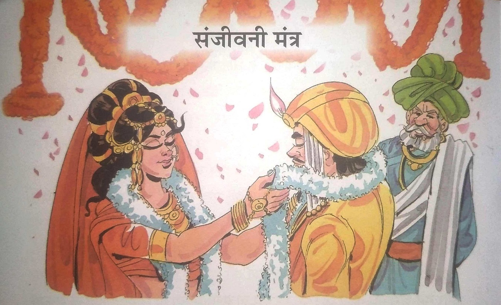
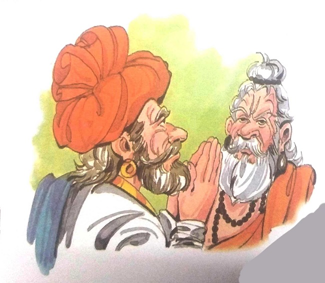
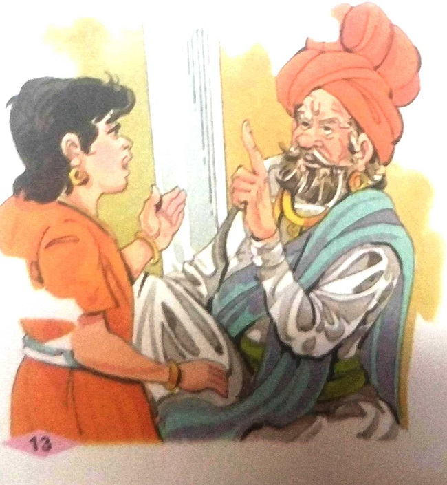
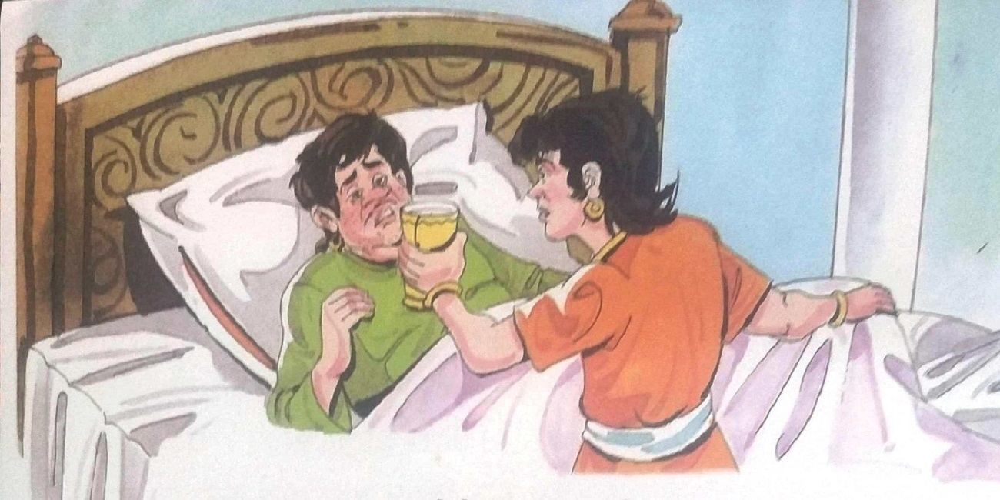
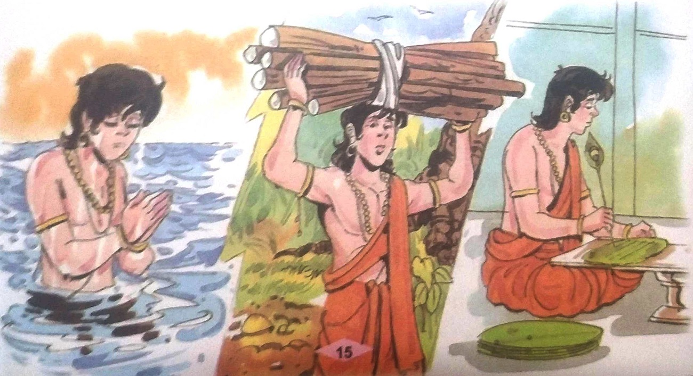
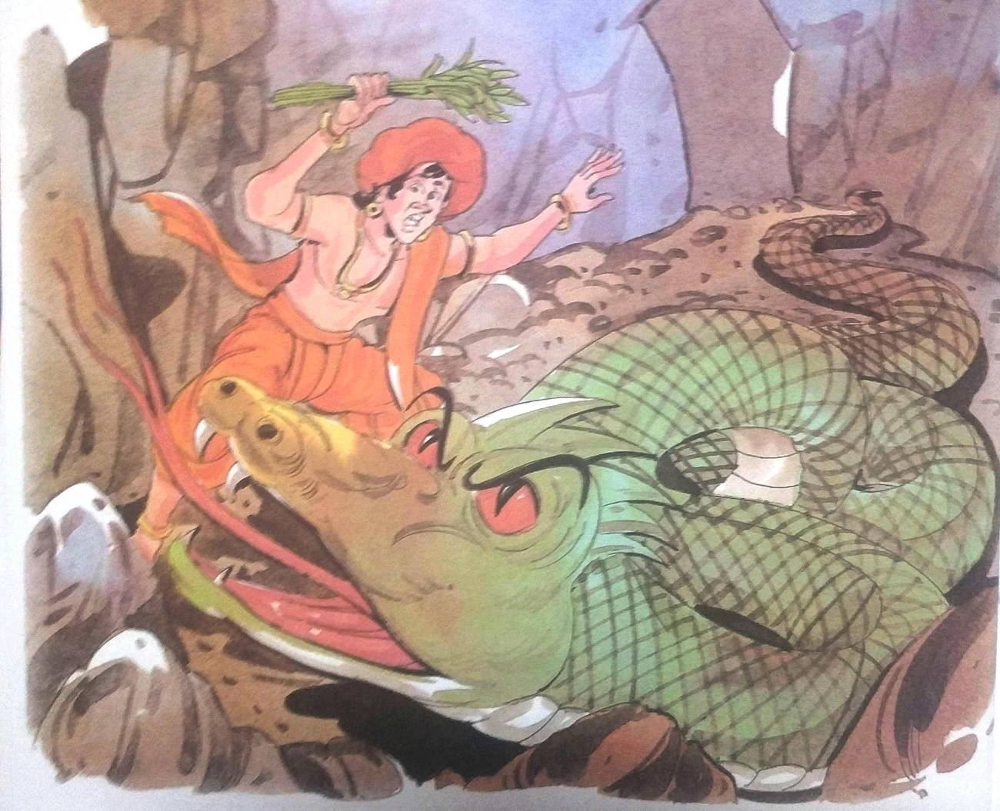
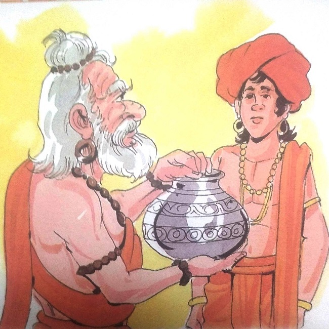
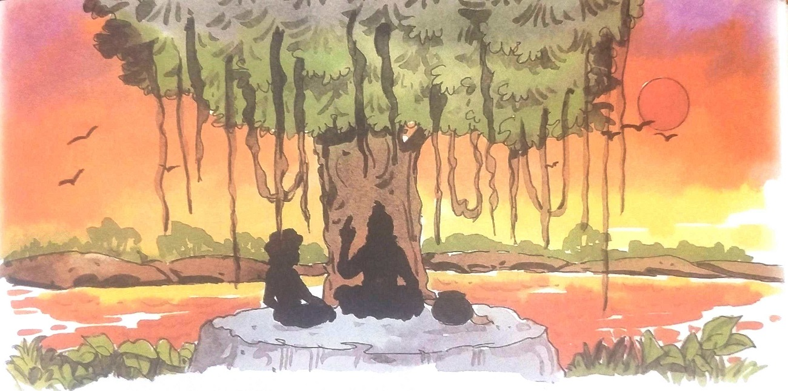
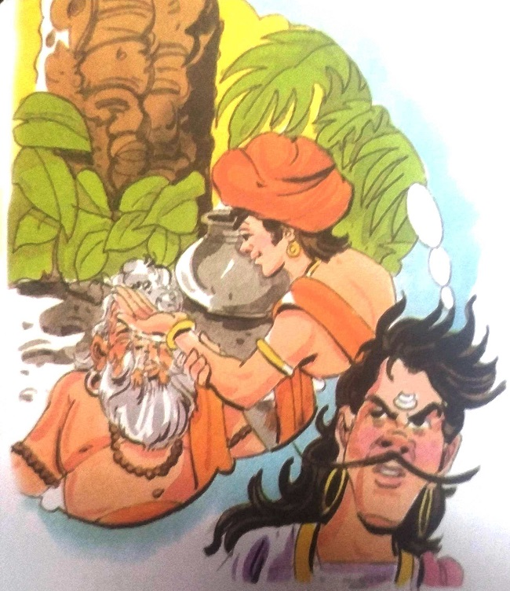

૧૭-સંજીવની મંત્ર

રાજા વિક્રમ ફરી એક વાર મૃતદેહ લાવવા ઝાડ પાસે ગયો. તેઓ મૃતદેહને ઝાડ પરથી નીચે ઉતારીને
ચાલવા
લાગ્યા. વેતાલાએ તેમને વાર્તા કહેવાનું શરૂ કર્યું - કેશવ નામનો એક શ્રીમંત જમીનદાર હતો. તેમને એક જ
પુત્ર રાઘવ હતો. તે પ્રેમથી બગડ્યો હતો. જ્યારે તે મોટો થયો ત્યારે તેણે ઘણી ખરાબ ટેવો શીખી. તેના
માતા-પિતાએ તેને ઘણું સમજાવ્યું, પરંતુ તેની તેના પર કોઈ અસર થઈ નહીં. આખરે તેના પિતાએ તેના લગ્ન
કરવાનું વિચાર્યું. તેઓએ વિચાર્યું કે લગ્ન પછી કદાચ તે સુધરી જશે. તેણે એક સારી છોકરી જોઈ અને તેની
સાથે લગ્ન કર્યા. તેનું નામ જાનકી હતું. તે સારા સંસ્કાર અને ધાર્મિક સ્વભાવની છોકરી હતી.
જાનકીએ ઘણી કોશિશ કરી, પણ તે પોતાના પતિની રીત બદલી શકી નહીં. રાઘવ
પહેલાની જેમ ખરાબ ટેવોનો શિકાર
બની રહ્યો. આ જોયા પછી પણ કેશવ અને તેની પત્નીએ પુત્ર રાઘવના સુધરવાની આશા છોડી ન
હતી. તેઓને આશા
હતી કે જ્યારે રાઘવને સંતાન થશે ત્યારે તે ચોક્કસ બદલાઈ જશે. પણ ભાગ્ય આગળ કોણ છે?
રાઘવ અને જાનકીના
લગ્ન દસ વર્ષો વીતી ગયા પણ તેઓને એક બાળક ના થયું.
એક દિવસ તેમના ગામમાં દર્શન નામના ઋષિ આવ્યા. કેશવ તેને મળવા ગયો. તેણે
તેમને
પોતાની આખી વાત કહી. ઋષિ કેશવના ઘરે ગયા અને સંતાનપ્રાપ્તિ માટે વિશેષ પૂજા કર્યા
પછી તેમણે કેશવની પુત્રવધૂ જાનકીને એક જામફળ ખાવા માટે આપ્યું અને કહ્યું, "તે ખાઓ,
ભગવાનની ઈચ્છા, તમને જલ્દી જ સંતાન થશે."
|

|
|

|
તે ફળ ખાધાના એક વર્ષમાં જાનકીએ પુત્રને જન્મ આપ્યો. કેશવે આખા ગામ
માટે મિજબાની
યોજીને પૌત્રના જન્મની ઉજવણી કરી. બાળકનું નામ માધવ હતું. રાઘવ તેના પુત્ર માધવને
ખૂબ પ્રેમ કરતો હતો. પિતા અને પુત્ર વચ્ચેનો પ્રેમ જોઈને કેશવ અને તેની પત્ની ખૂબ
ખુશ થયા. જાનકી ખુશીથી પ્રસન્ન થઈ ગઈ. જ્યારે માધવ પાંચ વર્ષનો થયો, ત્યારે તેણે
તેના પિતાની ખરાબ ટેવો શીખવાનું શરૂ કર્યું. આ જોઈને કેશવે તેને કહ્યું, "દીકરા!
તારા પિતા સારા વ્યક્તિ છે, પણ તેમની ખરાબ આદતો છે. ભગવાન આવા લોકોને બિનઆરોગ્યપ્રદ
બનાવીને સજા કરે છે. હું કહેવાનો અર્થ એટલો જ કે તારે તારા પિતાને પ્રેમ કરવો જોઈએ
પણ તેની ખરાબ આદતો. ના. સમજ્યા?"
આ સાંભળી માધવે ચિંતિત સ્વરે કહ્યું, "તો તમે જ કહો કે મારે શું કરવું
જોઈએ જેથી
ભગવાન તેમની ખરાબ ટેવો માટે તેમને સજા ન કરે . "જો તમે સાચા હૃદયથી ભગવાનની પૂજા
કરશો, તો તે તમારી વાત સાંભળશે," કેશવે સલાહ આપી.
|
તે દિવસથી માધવે પૂજા કરવાનું શરૂ કર્યું. પણ તેમાં કંઈક બીજું લખેલું હતું. કેશવની
વાત સાચી પડી. માધવ પંદર વર્ષનો થયો ત્યારે તેના પિતા બીમાર પડ્યા. તેની હાલત દિવસે
દિવસે બગડતી જતી હતી. માધવ ખૂબ ચિંતિત હતો.

તે દરમિયાન સાધુ દર્શનનો અંતિમ સમય પણ નજીક આવી ગયો. તેમની પાસે જે જ્ઞાન અને પુષ્કળ
સંપત્તિ હતી તે તેને કોઈ લાયક વ્યક્તિને સોંપવા માંગતો હતો.
ઘણું વિચારીને તેણે માધવ વિશે વિચાર્યું. તેણે તેનું જ્ઞાન તેને આપવાનું નક્કી
કર્યું. તેઓ તરત જ કેશવના ગામ તરફ ગયા. ત્યાં પહોંચ્યા બાદ તેઓ તેમના ઘરે ગયા હતા.
અને માધવને મળીને તેણે કહ્યું કે, "હું મારા જ્ઞાનનો ભંડાર તમને સોંપવા માંગુ છું.
આ જ્ઞાનના કારણે તમે નામ અને કીર્તિ પ્રાપ્ત કરી શકશો."
પણ માધવે કહ્યું, “મારે તમારા જ્ઞાનની સંપત્તિ જોઈતી નથી.
જો તમે તમારી શક્તિથી મારા પિતાનો ઈલાજ કરી શકશો તો સારું થશે.” ઋષિએ હસતાં-હસતાં કહ્યું, “મેં જે
જ્ઞાન મેળવ્યું છે તે તમારા પિતાના કલ્યાણ માટે જ નથી પણ સર્વ લોકોના કલ્યાણ માટે છે.”"ઠીક છે. પણ
અત્યારે મને મારા પપ્પાની બીમારીની ચિંતા છે. જ્યાં સુધી મારું મન સ્થિર નહીં હોય તો હું કેવી રીતે
ભણી શકીશ" માધવે કહ્યું.
"તમે એક કામ કરો. તમે બદ્રિકા નામના જંગલમાં જાઓ અને ઋષિ મહાભિવને મળો. તેઓ એક મહાન
વૈદ્ય છે. તેમની
સેવા કરીને અને તેમની પાસેથી સંજીવની મંત્ર શીખવાથી તમે તમારા પિતાનો ઈલાજ કરી શકો છો," મુનિએ
કહ્યું.
માધવ તરત જ બદ્રિકાના જંગલ તરફ રવાના થયો. ત્યાં પહોંચ્યા પછી, તેઓ ઋષિ મહાભિવને મળ્યા
અને તેમને
તેમના આગમનનું કારણ જણાવ્યું. સાધુ મહાભિવે કહ્યું, "તમારા પિતા પ્રત્યેનો તમારો પ્રેમ પ્રશંસનીય
છે. પરંતુ સંજીવની મંત્ર શીખવો સરળ નથી. આ મંત્ર શીખનાર વ્યક્તિએ અત્યંત હિંમતવાન અને અનુશાસનનું
પાલન કરવું જોઈએ. શું તમે આ બધું કરી શકશો કે નહીં?" "હું ચોક્કસ કરીશ. જો તમે ઇચ્છો તો તમે મારી
પરીક્ષા કરી શકો છો," માઘવાએ ખાતરી સાથે જવાબ આપ્યો.

માધવની શ્રદ્ધા જોઈને ઋષિ મહાભિવે તેને તાલીમ આપવાનું શરૂ કર્યું. મહાભિવે માધવને જે
કંઈ કરવાનું કહ્યું, તે તેણે પૂરા સમર્પણથી કર્યું. તે સવારે વહેલા ઉઠીને નદીના ઠંડા પાણીમાં સ્નાન
કરતો. પછી જંગલમાંથી લાકડાં ભેગાં કરીને લાવતો . તે પછી તે છ કલાક અભ્યાસ કરતો. તે માત્ર કાચા
શાકભાજી અને ફળો જ ખાતો હતો. દરરોજ રાત્રે સૂતા પહેલા તે પિતાના સ્વાસ્થ્ય માટે પ્રાર્થના કરતો.
એક મહિના પછી, મહાભિવે તેને કહ્યું, "હું તારાથી ખુશ છું. હવે તારી હિંમતની કસોટી
કરવાનો સમય આવી ગયો છે. અહીંથી થોડે દૂર પશ્ચિમ દિશામાં એક ટેકરી પર એક ગુફા છે. તે ગુફામાં એક અજગર
રહે છે. ધ્યાનથી જાઓ અને ગુફાની દીવાલો પર ઉગેલી દવા લઈ આવ." "હા ગુરુદેવ." માધવે નિર્ભયતા બતાવતા
કહ્યું.

તે તરત જ ગુફા તરફ જવા લાગ્યો. અજગર હુમલો કરે તે પહેલા તેણે ગુફાની દીવાલોમાંથી દવા
તોડી નાખી અને સુરક્ષિત બહાર આવી ગયો. તેમણે દવા મહાભિવને સોંપી. મહાભિવે માધવની હિંમતની પ્રશંસા
કરી. એક મહિના પછી મહાભિવે ફરીથી માધવને કહ્યું, "આ જંગલની મધ્યમાં એક જૂનું વિશાળ વટવૃક્ષ છે.
ત્યાં ભૂતોનો વાસ છે. તું અડધી રાત્રે ત્યાં જઈને ઝાડના થડમાં ઉગેલી દવા લઈ આવ. જો તું નિર્ભય હોય.
જો તમે ત્યાં જશો તો ભૂત તમારું કોઈ નુકસાન કરી શકશે નહીં અને જો તમે ડરી જશો તો તમને કોઈ બચાવી
શકશે નહીં. માધવે પણ કોઈ પણ જાતના ડર વગર આ કામ પૂરું કર્યું. એક મહિના પછી સાધુ મહાભિવે તેને બીજી
દવા લાવવા કહ્યું. આ વખતે તેણે તળાવની વચ્ચે ખીલેલા કમળના ફૂલો વચ્ચે ઉગેલી દવા લાવવાની હતી. મગરોએ
તે તળાવ પર શાસન કર્યું. પણ દર વખતની જેમ આ વખતે પણ માધવ પોતાના કામમાં સફળ રહ્યો.
|

|
બીજા દિવસે ગુરુએ માધવને એક ઘડો આપ્યો અને કહ્યું, “આ ઘડાના પાણીમાં
તમે લાવેલી દવાઓ
મિશ્રિત છે. હવે હું તને સંજીવની મંત્ર ભણાવીશ. જો તમે આ પાણી કોઈ વ્યક્તિને
મંત્રનો જાપ કરતી વખતે
પીવા માટે આપો છો, તો તે સંપૂર્ણ સ્વસ્થ થઈ જશે અને લાંબુ આયુષ્ય પ્રાપ્ત કરશે.
એમ કહીને મહાભિવે માધવને મંત્ર સંભળાવ્યો. માધવ ખુશ થઈ ગયો. તેણે ગુરુ
પાસે જવાની
પરવાનગી માંગી. તેણે કહ્યું, "દીકરા. સંજીવની મંત્રનો ઉપયોગ જીવનમાં માત્ર એક જ વાર
કરી શકાય છે.
યાદ રાખો કે તારા પિતાએ જાણી જોઈને ખરાબ કામ કર્યું છે. તેના પરિણામે, તેઓ બીમારીથી
પીડાય છે. તેથી
તું આ મંત્રનો જીવનમાં ઉપયોગ કર. તેના બદલે. તમારા પિતાનો ઈલાજ કરવાનો પ્રયાસ
કરતાં, તમે સમાજના
કલ્યાણ માટે કરો તો સારું રહેશે. આ મારી સલાહ છે. ભવિષ્યમાં તમારી ઈચ્છા છે."
માધવે કહ્યું, "મારા પિતાનો ઈલાજ કરવાની જવાબદારી મારી છે. મારા પિતાને
મારી જરૂર છે."
|
પછી માધવ પોતાના ઘર તરફ જવા લાગ્યો. રસ્તામાં તેણે સંતને પણ મળવાનું વિચાર્યું. તે
તેમની પાસે ગયો અને તેમને સલામ કરી. ઋષિએ કહ્યું, "તું એક અસાધારણ છોકરો છે. તેથી જ તું સંજીવની
મંત્ર શીખી શક્યો. પણ હવે મૃત્યુ મારી નજીક આવીને ઊભું છે. હું કાલે આ દુનિયા છોડી દઈશ. તે પહેલાં
હું તને જેટલું જ્ઞાન આપવા માંગું છું, તે તું હસ્તગત કરી લે."
પછી બંને નદી કિનારે આવેલા એક ઝાડ નીચે આવીને બેઠા. ઋષિએ માધવને જ્ઞાન આપવાનું શરૂ કર્યું. માધવ
ધ્યાનથી સાંભળતો રહ્યો. કેટલાય કલાકો વીતી ગયા. રાત્રે માધવ અચાનક ઊભો થઈને બેસી ગયો. તેણે દર્શન
કરીને કહ્યું, "ગુરુદેવ! મારે તમારી પાસેથી સંપૂર્ણ જ્ઞાન મેળવવું છે. તમે મને કહી શકશો કે તમારો
જીવ બચાવવા મારે શું કરવું પડશે?"

દર્શને ઉદાસ સ્વરે કહ્યું, "જો તમે મારા પર સંજીવની મંત્રનો પ્રયોગ કરશો તો મારા
આયુષ્યના દસ વર્ષ લંબાશે. પણ તમે તમારા પિતાને બચાવવા માટે સંજીવની મંત્ર શીખ્યા છો."
કંઈ બોલ્યા વગર માધવે તરત જ સંજીવની મંત્રનો જાપ શરૂ કર્યો અને દર્શનના મોંમાં ઘડામાંથી
પાણી રેડ્યું. દર્શના ખુબ ખુશ હતા. માધવ એક અઠવાડિયું દર્શન સાથે રહ્યો અને તેની પાસેથી જ્ઞાન
મેળવ્યું. પછી જ્ઞાન પ્રાપ્તિ પછી દર્શન કરીને આશીર્વાદ લીધા અને પોતાના ઘરે પાછા ફર્યા. ઘરે પાછા
આવીને તેણે જોયું કે તેના પિતા સંપૂર્ણ સ્વસ્થ થઈ ગયા છે. આખો પરિવાર એકસાથે ખૂબ જ ખુશ હતો. માધવે આ
ચમત્કાર માટે મનમાં મહાભિવનો આભાર
માન્યો.
વેતાલે વાર્તા અહીં પૂરી કરી. તેણે કહ્યું, "રાજા! જ્યારે માધવને
સમાજના ભલા માટે
સંજીવની મંત્રનો ઉપયોગ કરવાનું કહેવામાં આવ્યું ત્યારે તેણે ના પાડી દીધી. પરંતુ
તેણે તે મંત્રનો
ઉપયોગ તત્વજ્ઞાનમાંથી જ્ઞાન મેળવવા માટે કર્યો. શું તે સ્વાર્થી ન હતો? દર્શન તો
જગતના કલ્યાણની
વાતો કરતો, પણ તેણે ચતુરાઈથી આખો મામલો વ્યવસ્થિત રીતે ઉકેલી નાખ્યો અને પોતાનું
જીવન ઉન્નત કર્યું.
અને સંજીવની મંત્ર વિના રાઘવ કેવી રીતે સાજો થયો? મારી શંકાઓને ઝડપથી દૂર કરો
નહીંતર તમારું માથું
ટુકડા થઈ જશે."
"કોઈ પણ ખચકાટ વિના રાજા વિક્રમાદિત્યએ કહ્યું, “એ વાત સાચી છે કે અગાઉ
માધવે સૌના ભલા
માટે મંત્રનો જાપ કરવાનો ઇનકાર કર્યો હતો, પરંતુ દર્શનથી જ્ઞાન મેળવ્યા પછી તેમને
સમજાયું કે
સંજીવની મંત્રનો ઉપયોગ લોકોના હિત માટે થઈ શકે છે. તે યોગ્ય બાબત છે.તેને સમજાયું
કે તેના બીમાર
પિતાનો જીવ બચાવવા કરતાં કોઈ વિદ્વાનનો જીવ બચાવવો એ વધુ સારું છે, જેથી લોકોને લાભ
મળે.તેથી તેણે
તેમના પર સંજીવની મંત્રનો ઉપયોગ કર્યો.તેનું આ કાર્ય સ્વાર્થ ન કહેવાય.સંજીવની
મંત્ર વિના રાઘવની
સ્વસ્થતા માટે, તે તેની પત્ની અને પુત્રની પ્રાર્થનાને કારણે સાજો થયો અને તેને
સાધુ મહાભિવના
આશીર્વાદ પણ મળ્યા.
રાજાનો જવાબ સાંભળીને વેતાળ સંતુષ્ટ થઈ ગયો, પરંતુ રાજાએ મૌન તોડ્યું
તેના કારણે તે
હસતો હસતો પાછો ગયો અને તે જ ઝાડ પર ફાંસી લગાવી લીધી. રાજા વિક્રમાદિત્ય તેને
પકડવા તેની પાછળ ગયા.
|

|
|